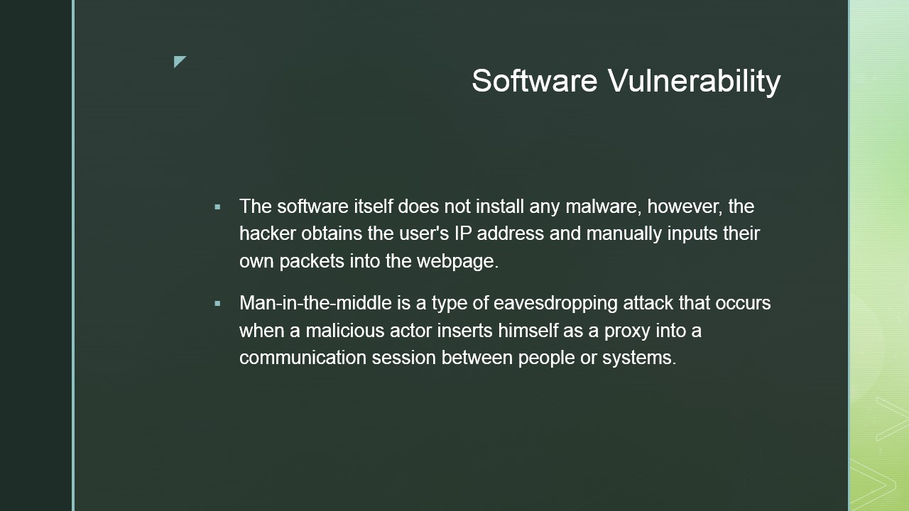
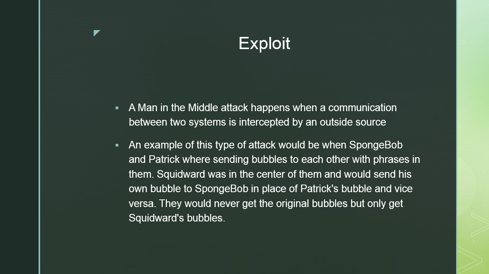
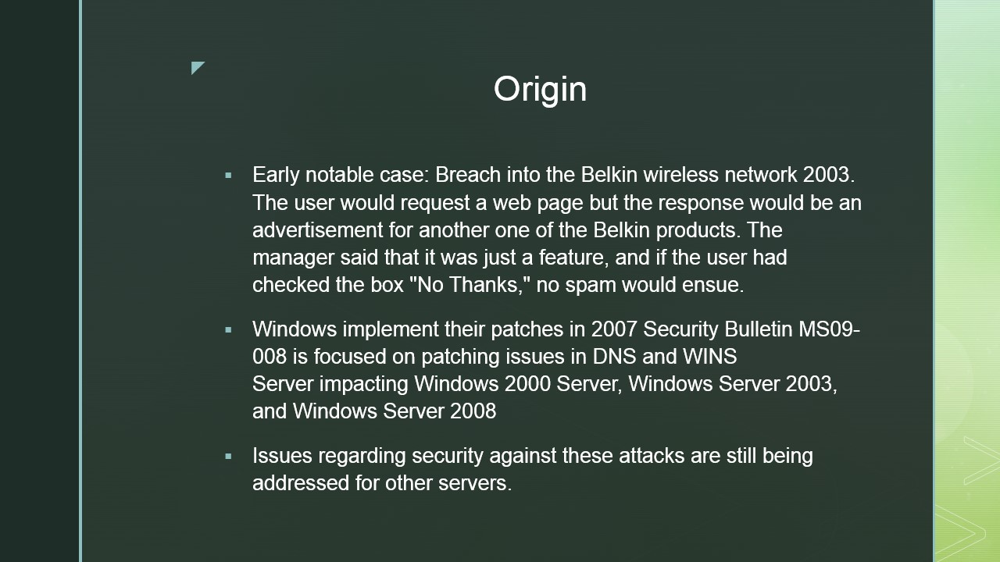
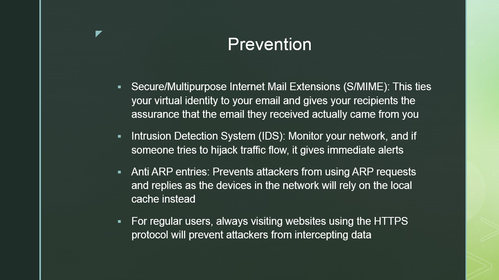
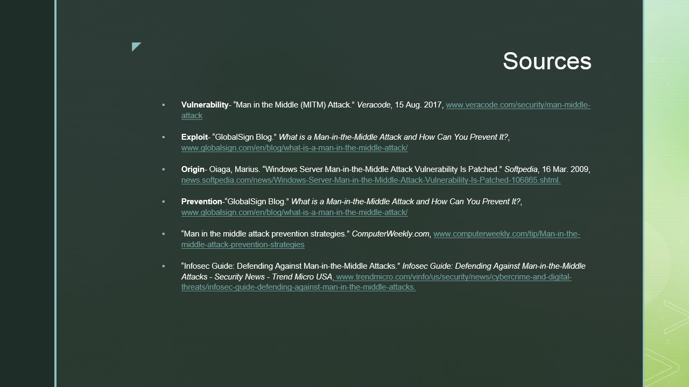

Malware is extremely dangerous for your computer and internet privacy. You must always be cautious while browsing unsafe websites.
The following images are screen captures of a presentation on Man in the Middle.





Example of a Man in the Middle attack

Purpose of the Presentation
There are many different types of malware. There are types that are installed manunally and some that use brute stregnth
to get into your computer. You can also receive emails with links in them that when open, allows the virus to spread through
your computer. The malware shown in the images above is called "Man in the Middle" and it is a type of malware that the attacker
uses by obtaining the user's IP address and then inputting their own packets into the websites that they want. A Man in the
Middle attack is similar to eavesdropping in the sense that the attacker is knowledable of what the victims are sending to
each other. The attacker puts himself in the middle of the two users and receives messages from both users and if the attacker
wants he can change the messages that were sent. This kind of attack might be used for important information such as launch
codes or credit card transactions. I learned that malware is so common and they are typically easy to spot for the most
part. From this point on I will be cautious while surfing the web. I will no longer click on suspicious ads and emails.